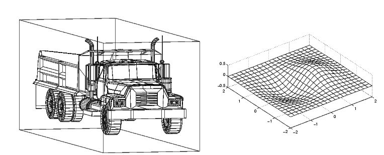
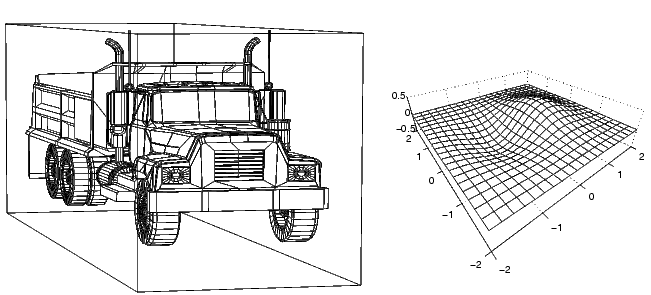
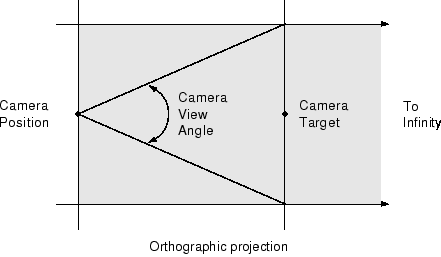
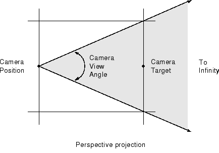

Understanding View Projections
Two Types of Projections
MATLAB® Graphics supports both orthographic and perspective projection types for displaying 3-D graphics. The one you select depends on the type of graphics you are displaying:
orthographicprojects the viewing volume as a rectangular parallelepiped (i.e., a box with six rectangular faces). Relative distance from the camera does not affect the size of objects. This projection type is useful when it is important to maintain the actual size of objects and the angles between objects.perspectiveprojects the viewing volume as the frustum of a pyramid (a pyramid whose apex has been cut off parallel to the base). Distance causes foreshortening; objects further from the camera appear smaller. This projection type is useful when you want to display realistic views of real objects.
By default, MATLAB displays objects using orthographic projection. You can set the
projection type using the camproj command.
These pictures show a drawing of a dump truck (created with
patch) and a surface plot of a mathematical function, both
using orthographic projection.

If you measure the width of the front and rear faces of the box enclosing the dump truck, you'll see they are the same size. This picture looks unnatural because it lacks the apparent perspective you see when looking at real objects with depth. On the other hand, the surface plot accurately indicates the values of the function within rectangular space.
Now look at the same graphics objects with perspective added. The dump truck looks more natural because portions of the truck that are farther from the viewer appear smaller. This projection mimics the way human vision works. The surface plot, on the other hand, looks distorted.

Projection Types and Camera Location
By default, MATLAB adjusts the CameraPosition,
CameraTarget, and
CameraViewAngle
properties of the axes to point the camera at the center of the scene and to include
all graphics objects in the axes. If you position the camera so that there are
graphics objects behind the camera, the scene displayed can be affected by the value
of the axes Projection property. If
the value of the Projection property is
"orthographic", then the CameraViewAngle
property determines the extent of the scene at the camera target. If the value of
the Projection property is "perspective",
then the CameraViewAngle property determines the extent of the
scene from the camera position to infinity.
This diagram illustrates the visible area (shaded in gray) when you use the orthographic projection. Anything in front of the camera is visible.

When you use the perspective projection, you see only what is visible in the cone of the camera view angle.

Printing and Exporting 3-D Scenes
The same effects described in the preceding section apply to printed hard copy output and exported images of 3-D scenes.
If you want to export a scene as a vector graphics file, consider the effect
of the Projection property:
The
"orthographic"projection displays all objects regardless of the camera position.The
"perspective"projection is not recommended when graphics objects are behind the camera position.